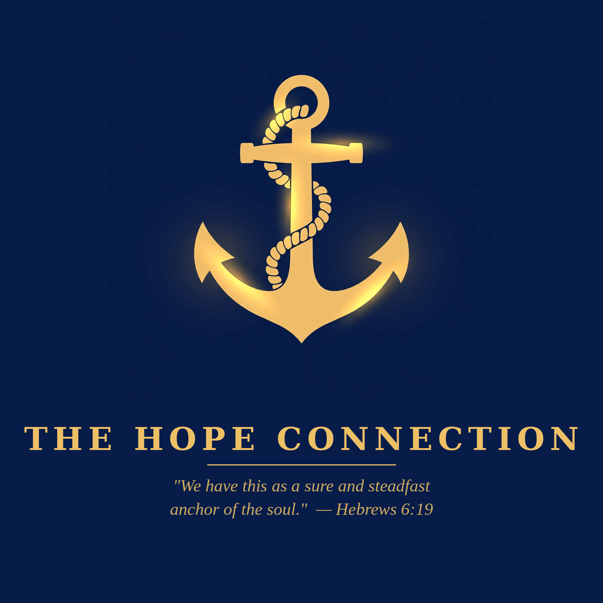

Has Jesus met you where you are? Your story could be the hope someone else is waiting for.
Every testimony on The Hope Connection started the same way — an ordinary person willing to say, "This is where I was, and this is what Jesus did." You don't need a dramatic past or perfect words. If Christ has changed you, someone needs to hear it.
Write as much or as little as you like. If you'd rather talk it through instead of writing, just say so.
Send your story by email. Lewis reads every one personally. If your story is featured — on the podcast or the blog — it will only ever be shared the way you approve: full name, first name only, or anonymous, your choice. Nothing is ever shared without your clear permission.
"And they have conquered him by the blood of the Lamb and by the word of their testimony." — Revelation 12:11 (ESV)